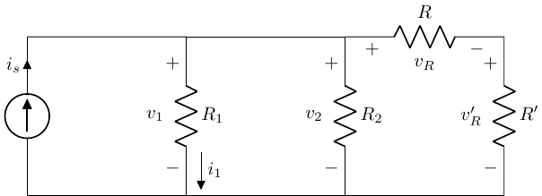
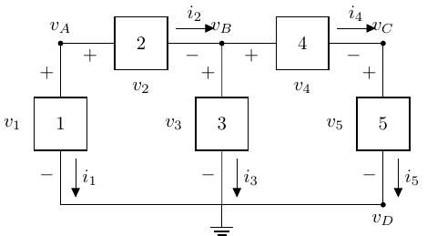
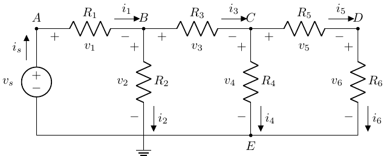

Node Voltage & Mesh Current Analysis
BME253L - Fall 2025
Learning Objectives
Practice using voltage and current division, with equivalent resistances, to analyze circuits.
Introduce and implement Node Voltage Analysis (NVA)
Introduce and implement Mesh Current Analysis (MCA)
Solve for \(v_o\) Using Voltage Division

Given: \(v_s = 300 V\), \(R_1 = R_2 = R_0 = 100 \Omega\), \(R_3 = 200 \Omega\)
Step 1: Solve for \(v_o\) in terms of \(v_3\)
Voltage division of nodes \(B \rightarrow C \rightarrow D\).
\(v_o = v_3 \frac{R_o}{R_o + R_2}\)
Step 2: Solve for \(v_3\) in terms of \(v_s\)
\[ \begin{gather} v_3 = v_s \frac{R_3 || (R_o + R_2)}{R_1 + R_3 || (R_o+R_2)} \\ v_o = 75 V \end{gather} \]
We didn’t have the explicitly use KCL, KVL or Ohm’s law (but they are all in play for the voltage division and equivalent resistance relationships)!
Solve for \(i_1(R_x)\) Using Current Division

Simplify to Equivalent Circuit with Two Branches
\[ \begin{gather} i_1 = i_s \frac{R_{eq}}{R_1 + R_{eq}} \\ R_{eq} = R_2 || (R+R') \\ \end{gather} \]
Let \(R_3 = R + R'\) (series equivalent), just to make expression easier to read.
\[ i_1 = i_s \frac{R_2 R_3}{R_2 R_3 + R_1 R_3 + R_1 R_2} \]
Node Voltage Analysis (NVA)
- More complex circuits will quickly become overwhelming with number of simultaneous equations to solve based on KVL, KCL and Ohm’s law.
A circuit with 6 elements yields 12 equations and 12 unknowns!
- One approach to reducing this number of equations and unknowns is to express the system of circuit analysis equiations in terms of node voltages.

\[ \begin{gather} i_R = \frac{v_A - v_B}{R} \\ v_R = v_A - v_B \end{gather} \]
NVA: General Approach
- Label nodes, reference (
GND= 0), and component voltages.

\[ \begin{align} v_1 & = v_A - v_D = v_A \\ v_2 & = v_A - v_B \\ v_3 & = v_B - v_D = v_B \\ v_4 & = v_B - v_C \\ v_5 & = v_C - v_D = v_C \end{align} \]
Note that 5 unknown voltages (\(v_{1-5}\)) have been reduced to 3 (\(v_{A-C}\))!
Nodes shared by components get reduced.
The reference (ground) node is 0.
NVA Example: Ladder Circuit

Identify & label all nodes.
Label component voltages.
Select & label reference node (ground).
Choose a reference node that is shared by a lot of components. Since it is “0”, that node will disappear from all equations.
Write element voltages in terms of node voltages.
\[ \begin{align} v_E & = 0 \\ v_s & = v_A - v_E = v_A \\ v_1 & = v_A - v_B \\ v_2 & = v_B - v_E = v_B \\ v_3 & = v_B - v_C \\ v_4 & = v_C - v_E = v_C \\ v_5 & = v_C - v_D \\ v_6 & = v_D - v_E = v_D \end{align} \]
Apply KCL at nodes (except at sources and reference)
\[ \begin{align} B & : i_1 = i_2 + i_3 \\ C & : i_3 = i_4 + i_5 \\ D & : i_5 = i_6 \end{align} \]
Apply Ohm’s Law (to relate \(i\)s to \(v\)s)
\[ \begin{align} i_1 & = \frac{v_A - v_B}{R_1} = \frac{v_S - v_B}{R_1} \\ i_2 & = \frac{v_B}{R_2} \\ i_3 & = \frac{v_B - v_C}{R_3} \\ i_4 & = \frac{v_C}{R_4} \\ i_5 & = \frac{v_C - v_D}{R_5} \\ i_6 & = \frac{v_D}{R_5} \end{align} \]
Sub \(v\)’s into KCL \(i\) expressions
- Node B
\[ \begin{gather} \frac{v_s - v_B}{R_1} = \frac{v_B}{R_2} + \frac{v_B-v_C}{R_3} \\ v_B\left( \frac{-1}{R_1}-\frac{1}{R_2}-\frac{1}{R_3} \right) + \frac{v_C}{R_3} = \frac{-v_s}{R_1} \end{gather} \]
- Node C
\[ \begin{gather} \frac{v_B-v_C}{R_3} = \frac{v_C}{R_4} + \frac{v_C-v_D}{R_5} \\ \frac{v_B}{R_3} + v_C\left(\frac{-1}{R_3}-\frac{1}{R_4}-\frac{1}{R_5} \right) + \frac{v_D}{R_5} = 0 \end{gather} \]
- Node D
\[ \begin{gather} \frac{v_C - v_D}{R_5} = \frac{v_D}{R_6} \\ \frac{v_C}{R_5}+v_D\left(\frac{-1}{R_5}-\frac{1}{R_6} \right) = 0 \end{gather} \]
Solve Simultaneous Equations
We now have 3 equations and 3 unknowns!
Setup 3x3 matrix with 3 linear, independent rows and columns to solve for \([v]\).
\[ \begin{bmatrix} \left(-\frac{1}{R_1}-\frac{1}{R_2}-\frac{1}{R_3}\right) & \frac{1}{R_3} & 0 \\ \frac{1}{R_3} & \left(-\frac{1}{R_3}-\frac{1}{R_4}-\frac{1}{R_5}\right) & \frac{1}{R_5} \\ 0 & \frac{1}{R_5} & \left(-\frac{1}{R_5}-\frac{1}{R_6}\right) \end{bmatrix} \begin{bmatrix} v_B \\ v_C \\ v_D \end{bmatrix} = \begin{bmatrix} \frac{-v_s}{R_1} \\ 0 \\ 0 \end{bmatrix} \]
- Solve for \([v]\) and then relative back to element equations to solve for element voltages and currents.
NVA Example: Two-Sources

Nodes A & C are set by two voltage sources.
\(v_A = v_{S1}\)
\(v_B = v_{S2}\)
Node D is reference (0).
Only \(v_B\) is unknown.
Setup NVA Equations
\(v_1 = v_{S1} - v_B\)
\(v_2 = v_B\)
\(v_3 = v_B - v_{S2}\)
KCL @ B: \(i_1 = i_2 + i_3\)
Solve for \(v_B\)
\[ \begin{gather} \frac{v_{S1} - v_B}{R_1} = \frac{v_B}{R_2} + \frac{v_B - V_{S2}}{R_3} \\ v_B = \frac{\frac{v_{S1}}{R_1} + \frac{v_{S2}}{R_3}}{\frac{1}{R_1} + \frac{1}{R_2} + \frac{1}{R_3}} \end{gather} \]
Mesh Current Analysis (MCA)

- Like NVA, which leverages KCL to simplify circuit analysis, MCA leverages KVL to simplify circuit analysis.
MCA Procedure
Identify meshes (closed loops, like used for NVA).
Assign unknonw mesh currents in a clockwise direction.
It is okay to assign a mesh current orientation that is opposite that of a current source. That will work itself out in the sign of the current.
Apply KVL to each mesh with mesh currents being used for circuit elements.
Solve linear set of equations.
Mesh A
\[ \begin{gather} -v_s + i_A R_1 + (i_A - i_B) R_2 = 0 \\ v_s = i_A (R_1 + R_2) - i_B R_2 \end{gather} \]
\(i_A\) and \(i_B\) are not the physical element currents; they are the mesh currents. The physical currents will be the superposition of the relevant mesh currents.
Mesh B
\[ \begin{gather} i_B R_3 + (i_B - i_C) R_4 + (i_B - i_A) R_2 = 0 \\ -i_A R_2 + i_B (R_2 + R_3 + R_4) - i_C R_4 = 0 \end{gather} \]
Mesh C
\[ \begin{gather} i_C R_5 + i_C R_6 + (i_C - i_B) R_4 = 0 \\ -i_B R_4 + i_C (R_4 + R_5 + R_6) = 0 \end{gather} \]
Solve Linear Set of Equations
\[ \begin{bmatrix} R_1 + R_2 & -R_2 & 0 \\ -R_2 & R_2 + R_3 + R_4 & -R_4 \\ 0 & -R_4 & R_4 + R_5 + R_6 \end{bmatrix} \begin{bmatrix} i_A \\ i_B \\ i_C \end{bmatrix} = \begin{bmatrix} v_s \\ 0 \\ 0 \end{bmatrix} \]
\[ \begin{gather} \bar{R} \bar{I} = \bar{V} \\ \bar{I} = \bar{R}^{-1} \bar{V} \end{gather} \]
- Solve for physical currents and voltages in terms of known mesh currents.
MCA: Current Sources

Mesh A: \(-V_S + i_A R_1 + (i_A - i_B) R_2 = 0\)
Mesh B: \(i_B = -I_S\)
Solve for \(i_A = \frac{V_s - I_s R_2}{R_1 + R_2}\)
Solve for physical voltages and currents in terms of mesh currents.